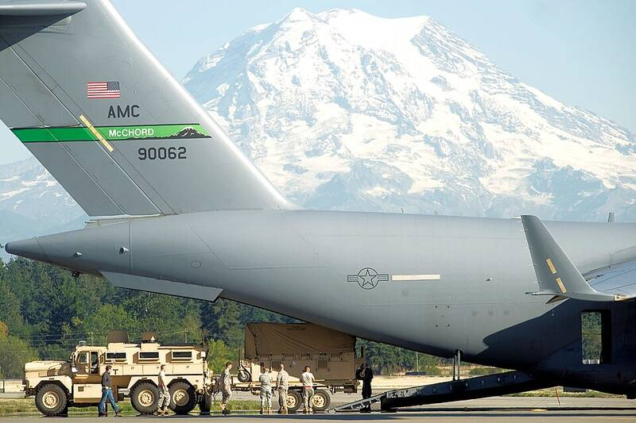

Joint Base Lewis-McChord
Washington

Joint Army and Air Force base south of Tacoma. 1
Open in the interactive Watcher
Sources
- Joint Base Lewis–McChord Wikipedia
Washington

Joint Army and Air Force base south of Tacoma. 1
Open in the interactive Watcher